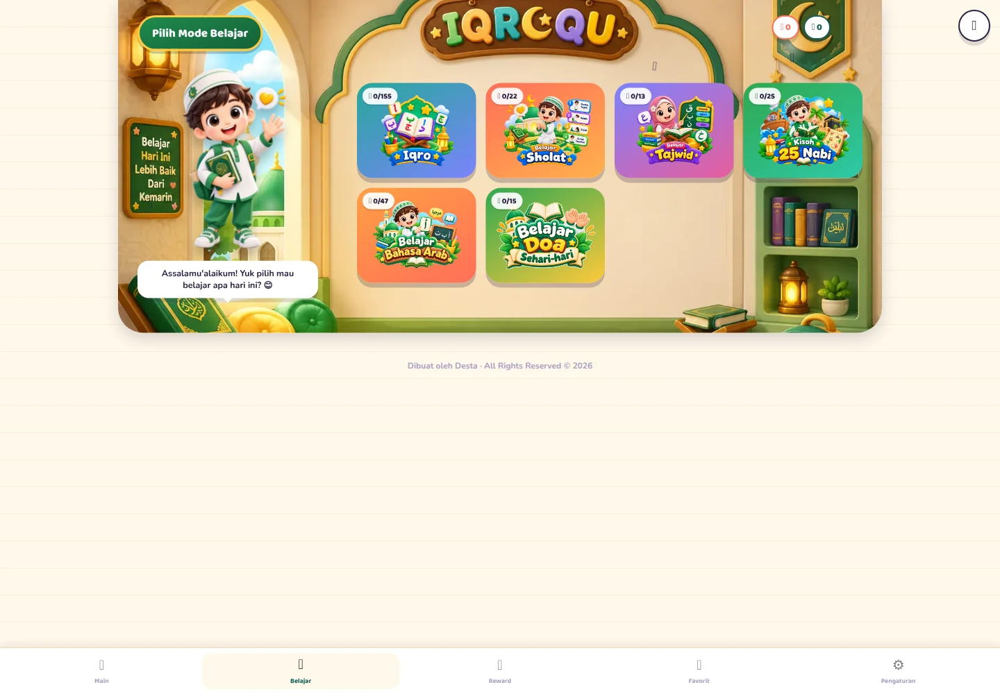
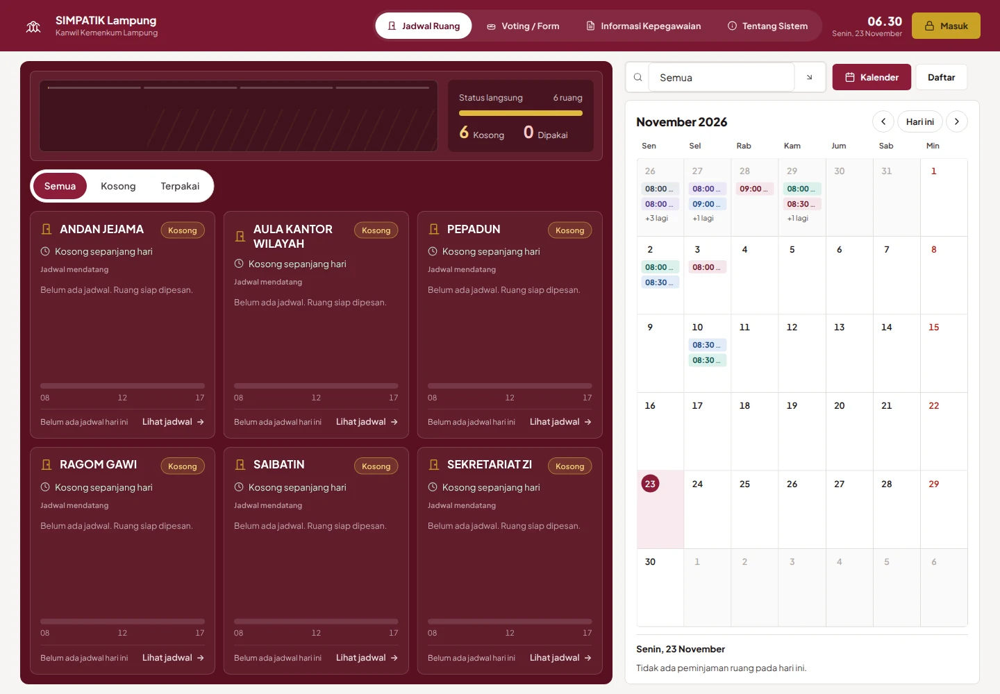
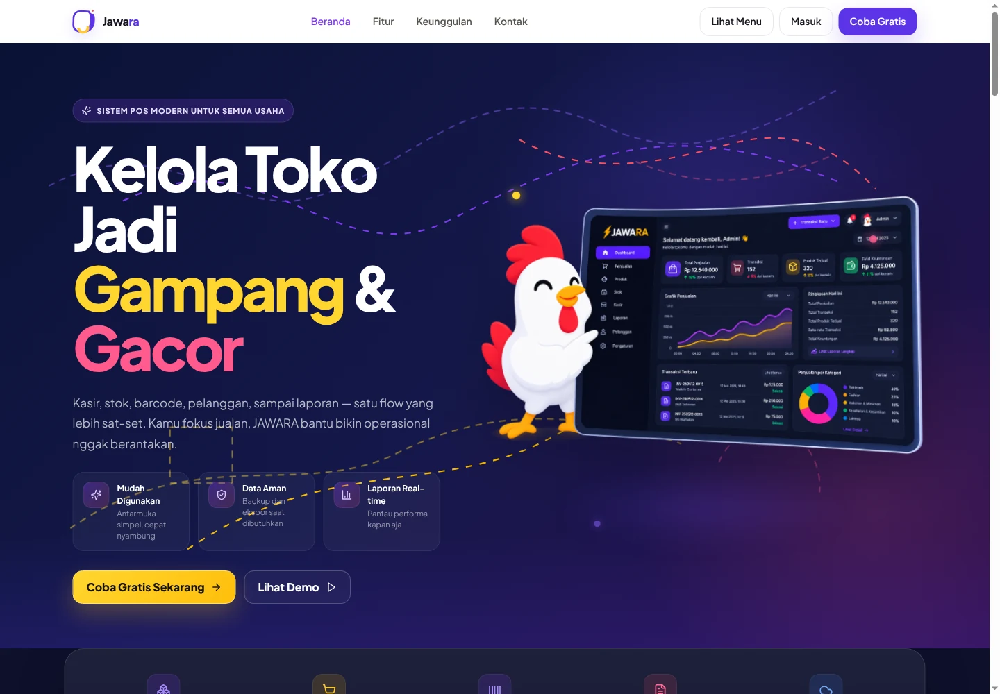

Web projects by Desta Riani Munaf
Destalabs.
A few things I've built.


d. / DestalabsProjects About Contact ↗
WEB APPS BY DESTA RIANI MUNAF
Web apps for
everyday tasks.
Three projects. One small lab.See the projects ↘
simpatik.destarianimunaf.workers.dev
01 / OFFICE ADMINLIVE WEB APP ↗
SIMPATIK
Letter numbering & meeting-room booking.
simpatik.destarianimunaf.workers.dev
CorrespondenceRoom availabilityMeeting calendar
02 / LEARNINGLIVE WEB APP ↗
IQROQU
An interactive way to learn to read the Qur'an.
iqroqu.destarianimunaf.workers.dev
Hijaiyah lettersGuided lessonsFor children
03 / SMALL BUSINESSOPEN DEMO ↗
Jawara
Sales, stock, and reports in one place.
destarianimunaf.github.io/jawara_demo
Point of saleInventoryReports
THE PERSON BEHIND THE PROJECTS
Built by Desta.
Computer Science & Management.
Web development, data, and a curiosity for how things work.
Desta Riani Munaf / Indonesia
d.d.d.d.
d. DestalabsWeb apps by Desta.
Take a closer look.
The projects
Open one. Have a look.03
Real screens, linked to the real apps
↗
01 / AdministrationWeb app
Letter numbering and meeting-room booking for everyday office work.
↗
02 / EducationWeb app
An interactive way for children to learn to read the Qur'an.
↗
03 / Small businessWeb app
Sales, stock, and reports for small businesses. Preview from the original demo.
A little background
Hi, I'm Desta.
I've been interested in IT since college. I build web apps, and I've been researching stocks and investing since 2019.
I studied Computer Science and have a Master's in Management, with a focus on HR.
Get in touch ↗Education
2023–2025Master's in Management
HR Management Track
2014–2018Bachelor's in Computer Science
Software & systems development
What I work with
Tools & interests
01Development
- React.js & JavaScript
- Laravel & PHP
- MySQL & databases
- System analysis
02Stocks & investing
- Fundamental analysis
- Technical analysis
- Stock research & portfolios
- Value investing
03Data & productivity
- Microsoft Excel & SPSS
- Power BI
- Google Workspace
- Data analysis
How I workProblem solving · Analytical thinking · Time management · Collaboration